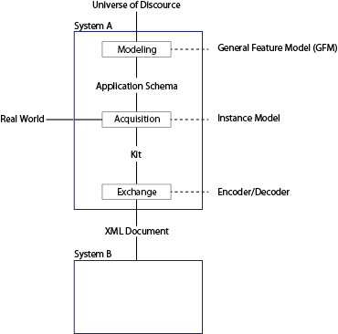
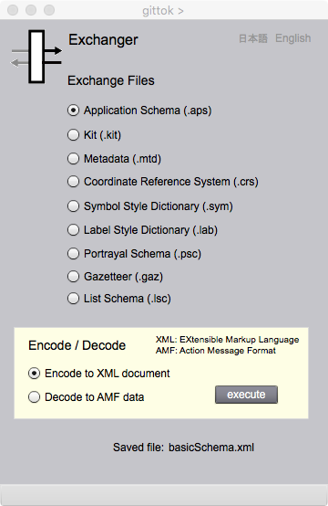

Exchanger
Introduction
The data format of kit and other data stored in auxiliary memory is AMF (Action Message Format) provided by Adobe. The aim of Exchanger is encode and decode AMF format data to and from XML documents for communication with other system. XML is a coding system that allows any type of information to be delivered across World Wide Web. Exchanger page will introduce basic concept of data exchange and how to use this page.
Data Exchange
It is important to encode data from inner format to intermediate format in compliance with standard, if you exchange data with others. If there is no standard of intermediate format, you have to provide encoder and decoder for every inner format. Encoding in this case is defined as conversion of data from inner format to intermediate format. And Decoding is data conversion from intermediate format to inner format.
XML (eXended Markup Language) document that gittok produce as intermediate data is not in compliance with existing international standard such as those provided by ISO/TC 211 and OGC. However, rules of gittok is a simplified version of these standards. You can understand standards easier after you learn gittok rules.

Figure 1. Encoding /Decoding mechanizm of geospatial data
Exchanger

Figure 2. Exchanger page
FIELDS
Saved file:
The file name saved after encoding or decoding.
BUTTONS
Exchnge Files
Select the type of file for exchange.
Encode/decode
Select encoing to the XML document or decoding the XMLdocument to the intarnal format file.
execute
Data format encoding or decoding is executed. The result is confirmed by XML parser to see XML ocument or by Editor page to see the result of decoding.
日本語
今あなたが読んでいるドキュメントが表示されます．
English
You can read the tutorial written in English.